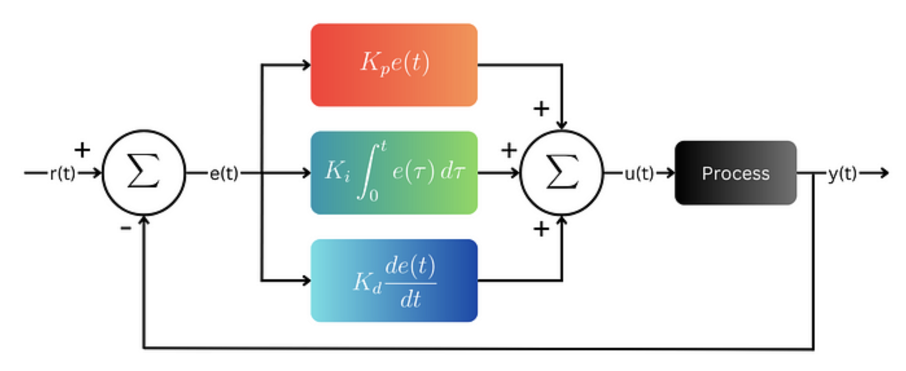
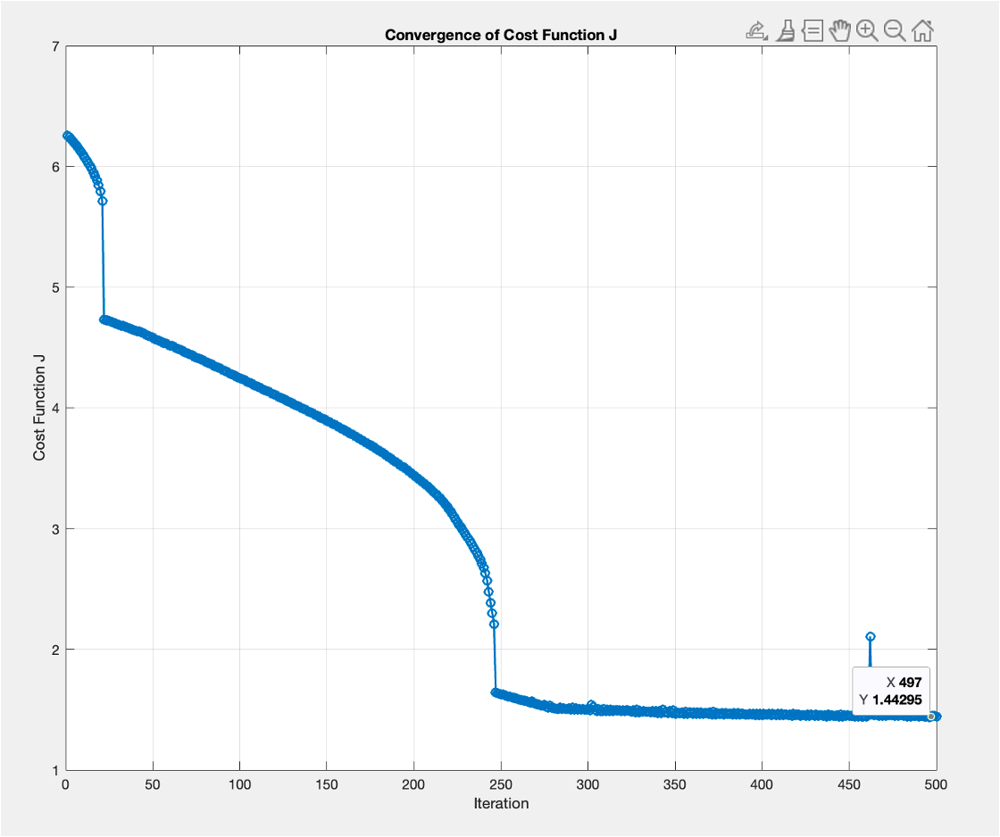

Optimal PID gains calculation using gradient descent
May 10, 2025Table of Contents
- Introduction
- Understanding the System: Second-Order Plant with Delay
- PID Controller Basics
- Gradient Descent Basics
- Formulating the Optimization Problem
- Implementation
- Results and Performance Comparison
- Conclusion
- References
Introduction
Proportional-Integral-Derivative (PID) controllers are among the most widely used control mechanisms in industrial and process control applications. Their simplicity, effectiveness, and ease of implementation make them the default choice for regulating temperature, pressure, speed, and other dynamic processes. However, tuning the PID gains ($Kp, Ki, Kd$) to achieve desired performance characteristics—like fast settling time, minimal overshoot, and zero steady-state error—is a challenging and often system-specific task.
Traditional PID Tuning Methods
Several classical methods have been developed over the years to automate PID tuning. Some of the most prominent include:
- Ziegler-Nichols Tuning Method
This empirical method is based on inducing sustained oscillations in the system and using the corresponding ultimate gain and period to compute PID parameters.
Limitation: Tends to produce aggressive control action with large overshoot and may not work well for systems with delay or significant nonlinearities.
Reference: Ziegler, J. G., & Nichols, N. B. (1942). Optimum settings for automatic controllers. Trans. ASME, 64(11). - Cohen-Coon Tuning
Designed specifically for first-order plus dead time (FOPDT) systems, this method uses a model of the plant to determine the controller gains.
Limitation: Not well-suited for higher-order or oscillatory systems, and its accuracy degrades with modeling error.
Reference: Cohen, G. H., & Coon, G. A. (1953). Theoretical Considerations of Retarded Control. Trans. ASME. - Relay Auto-Tuning (Åström and Hägglund)
Introduced the idea of using relay feedback to determine system characteristics and compute PID parameters.
Limitation: Requires controlled excitation of the system and may not work well in noisy environments or for systems with significant delays.
Reference: Åström, K. J., & Hägglund, T. (1984). Automatic tuning of simple regulators with specifications on phase and amplitude margins. Automatica, 20(5), 645–651. - Optimization-Based and Heuristic Approaches (e.g., Genetic Algorithms, Particle Swarm Optimization)
These methods explore a broad space of PID parameters using bio-inspired algorithms.
Limitation: Computationally intensive, may converge slowly, and can suffer from instability if not carefully constrained.
Understanding the System: Second-Order Plant with Delay
$$\textit{Second order Plant transfer func. with delay can be represented as,}$$ $$P(s) = e^{-\theta_p s} \cdot \frac{K_m}{T^2 s^2 + 2 \zeta T s + 1}$$
where:
- \( \theta_p \): Dead time (delay)
- \( K_m \): Plant gain
- \( \zeta \): Damping ratio
- \( T \): Time constant
PID Controller Basics
A PID controller is a feedback control loop mechanism that combines three terms: Proportional (P), Integral (I), and Derivative (D). These components work together to ensure the controlled system reaches and maintains the desired setpoint.
The continuous-time control law for a PID controller is:
$$ u(t) = K_p e(t) + K_i \int_{0}^{t} e(\tau)\,d\tau + K_d \frac{d}{dt}e(t) $$
Where:
- $u(t)$ is the control signal
- $e(t)$ is the error signal: the difference between the setpoint and the measured process output
- $K_p$ is the proportional gain
- $K_i$ is the integral gain
- $K_d$ is the derivative gain
Each term has a distinct effect on system behavior:
- Proportional (P): Reacts to the current error. Increases responsiveness, but alone may not eliminate steady-state error.
- Integral (I): Reacts to the accumulation of past error. Eliminates steady-state error but can introduce overshoot and slower response.
- Derivative (D): Reacts to the rate of change of error. Helps anticipate the system's behavior, improving stability and damping.
The PID controller in the Laplace domain is represented as:
$$ C(s) = K_p + \frac{K_i}{s} + K_d s $$
Or, in a unified form:
$$ C(s) = K_p \left(1 + \frac{1}{T_i s} + T_d s \right) $$
Where \( T_i = \frac{K_p}{K_i} \) is the integral time and \( T_d = \frac{K_d}{K_p} \) is the derivative time.
Proper tuning of these gains is essential to achieve a balance between speed, accuracy, and stability of the system.
Gradient Descent Basics
Gradient Descent is an iterative optimization algorithm used to find the minimum of a function. It is widely used in machine learning and control systems to minimize a cost function.
Suppose we have a cost function \( J(\theta) \) that we want to minimize, where \( \theta \) is a parameter (or set of parameters). The update rule for gradient descent is:
$$ \theta = \theta - \alpha \cdot \frac{dJ}{d\theta} $$
Here:
- \( \theta \): parameter to be optimized (e.g., PID gain like \( K_p \), \( K_i \), \( K_d \))
- \( \alpha \): learning rate, a small positive value that controls the step size
- \( \frac{dJ}{d\theta} \): gradient of the cost function with respect to the parameter
The gradient \( \frac{dJ}{d\theta} \) points in the direction of greatest increase of the function. By subtracting this value, we move in the direction of steepest descent.
In cases where the exact gradient is hard to compute analytically, we can approximate it numerically using:
$$ \frac{dJ}{d\theta} \approx \frac{J(\theta + \delta) - J(\theta)}{\delta} $$
where \( \delta \) is a small perturbation value.
Repeating this process iteratively allows us to converge to the value of \( \theta \) that minimizes \( J \).
Formulating the Optimization Problem
Let \( T_{\text{set}} \) be the settling time and \( M_p \) be the maximum overshoot for the given closed-loop transfer function.
We define a cost function \( J \) that captures the key performance goals of the control system:
$$ J = T_{\text{set}} + M_p $$
Our objective is to minimize this cost function by tuning the PID gains. Using the gradient descent method, we iteratively update the gains based on the gradient of \( J \) with respect to each gain:
$$ K_{p_{\text{gradient}}} = \frac{T_{\text{set}}(K_p + \delta, K_i, K_d) + M_p(K_p + \delta, K_i, K_d) - J}{\delta} $$
$$ K_{i_{\text{gradient}}} = \frac{T_{\text{set}}(K_p, K_i + \delta, K_d) + M_p(K_p, K_i + \delta, K_d) - J}{\delta} $$
$$ K_{d_{\text{gradient}}} = \frac{T_{\text{set}}(K_p, K_i, K_d + \delta) + M_p(K_p, K_i, K_d + \delta) - J}{\delta} $$
Here, \( \delta = e^{-4} \) is a small constant used to approximate the derivative numerically.
The PID gains are then updated as:
$$ K_p = K_p - \alpha \cdot K_{p_{\text{gradient}}} $$ $$ K_i = K_i - \alpha \cdot K_{i_{\text{gradient}}} $$ $$ K_d = K_d - \alpha \cdot K_{d_{\text{gradient}}} $$
Where \( \alpha = 0.0005 \) is the learning rate.
This optimization process is repeated until the cost function \( J \) reaches a minimum. The final PID gains are those that result in the lowest value of \( J \), thereby minimizing both the settling time and overshoot.
Implementation
The proposed algorithm was implemented using a MATLAB script. The complete source code is available in a GitHub repository.
The plant is modeled as a second-order system with a time delay, and includes a Zero Order Hold (ZOH) block modeled using Padé approximation. The following parameters were used:
sample_time_normal = 0.6;
zoh_pade_normal = tf([1], [sample_time_normal/2 1]);
plant_K = 0.99;
plant_zeta = 0.62;
plant_ts = 0.05;
plant_deadTime_normal = 0.45;
plant_num = [plant_K];
plant_deno = [plant_ts^2, 2*plant_zeta*plant_ts, 1];
G1_orig = tf(plant_num, plant_deno, 'IODelay', plant_deadTime_normal);
G = G1_orig * zoh_pade_normal;
The plant transfer function can be represented as:
$$ P(s) = e^{-\theta_p s} \cdot \frac{K_m}{T^2 s^2 + 2 \zeta T s + 1} $$
where:
- \( \theta_p \): Dead time (delay)
- \( K_m \): Plant gain
- \( \zeta \): Damping ratio
- \( T \): Time constant
The ZOH (Zero Order Hold) block is approximated using a first-order Padé approximation:
$$ \text{ZOH}(s) \approx \frac{1}{\frac{T_s}{2} s + 1} $$ where \( T_s = 0.6 \) seconds.
The overall transfer function is formed by multiplying the original plant model with the Padé approximation of ZOH:
$$ G(s) = G_{\text{orig}}(s) \cdot \text{ZOH}_{\text{pade}}(s) $$
Convergence of Cost Function
During the optimization, the cost function \( J = T_{\text{set}} + M_p \) was evaluated iteratively and
its convergence was monitored. The figure below shows the decrease in
\( J \) over iterations, indicating that the PID gains are moving toward an optimal set.

Results and Performance Comparison
We evaluate the performance of the PID controller tuned using the traditional Ziegler-Nichols (ZN) method and the proposed Gradient Descent (GD)-based optimization technique. The comparison is based on two key metrics:
- Settling Time \( T_{\text{set}} \): Time taken for the response to remain within a specified tolerance band.
- Overshoot \( M_p \): The maximum peak value of the response curve measured from the desired response level.
Response Plots
Figure 1: Step response using Ziegler-Nichols tuning
Figure 2: Step response using Gradient Descent tuning
Performance Metrics
| Method | \( K_p \) | \( K_i \) | \( K_d \) | Settling Time \( T_{\text{set}} \) (s) | Overshoot \( M_p \) (%) |
|---|---|---|---|---|---|
| Ziegler-Nichols | \( 1.26 \) | \( 1.7849 \) | \( 0.2224 \) | \( 7.58 \) | \( 48.6\% \) |
| Gradient Descent | \( 0.682 \) | \( 1.378 \) | \( 0.084 \) | \( 1.25 \) | \( 0.0386\% \) |
Conclusion
In this study, we explored a gradient descent-based optimization approach for tuning PID controller gains applied to a second-order system with delay. Unlike traditional methods, such as the Ziegler-Nichols technique, which often rely on empirical rules and may result in higher overshoot or longer settling time, the proposed method offers a more systematic and adaptable way to minimize a defined cost function.
By formulating the cost function as the sum of settling time (\( T_{\text{set}} \)) and overshoot (\( M_p \)), we enabled the PID controller to optimize system response characteristics directly. The gradient descent algorithm iteratively adjusted the controller gains to minimize this cost, leading to improved system performance.
The MATLAB-based implementation demonstrated successful convergence of the cost function, with final gains yielding significantly lower overshoot and faster settling time compared to the Ziegler-Nichols method. The statistical results and response plots validated the effectiveness of this approach.
Overall, this work showcases the potential of combining classical control theory with modern optimization techniques for robust and efficient controller design. Future extensions could involve multi-objective cost functions or applying the method to higher-order and nonlinear systems.
References
- K. J. Åström and T. Hägglund, "PID Controllers: Theory, Design, and Tuning," Instrument Society of America, 2nd Edition, 1995.
- G. F. Franklin, J. D. Powell, and A. Emami-Naeini, "Feedback Control of Dynamic Systems," Pearson, 7th Edition, 2015.
- S. Boyd and L. Vandenberghe, "Convex Optimization," Cambridge University Press, 2004. (Chapters on gradient-based methods)
- MATLAB Documentation, Control System Toolbox Documentation , The MathWorks, Inc.
- Ziegler, J. G., and Nichols, N. B., "Optimum Settings for Automatic Controllers," Transactions of the ASME, vol. 64, pp. 759–768, 1942.
- GitHub Repository (for code implementation): https://github.com/kalpgarg/pid_using_gradient_descent